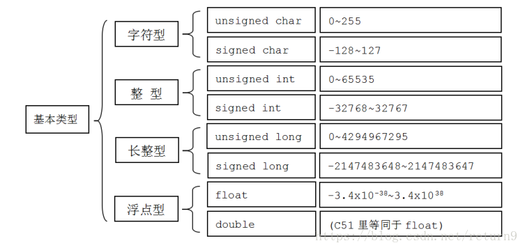
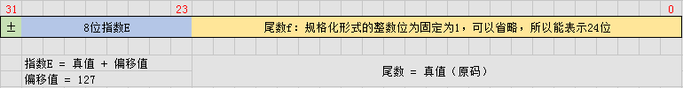

总结一些计算机基础知识
储存单位
- 位(bit)：数据存储的最小单位。在计算机中的二进制数系统中，位，简记为b,也称为比特，每个0或1就是一个位(bit)。计算机中的CPU位数指的是CPU一次能处理的最大位数。例如32位计算机的CPU一个机器周期内可以处理32位二进制数据的计算机。
- 字节(byte)：是8个二进制数，即8 bit 就称为一个字节（Byte）。字节这个词最早起源于1956年前后，由IBM公司提出。最早的拼写方式是bite，但是为了避免与bit混淆用y代替了i。
- 字(word)：字由若干字节构成，字的位数叫字长，一台8位机子：一个字等于1个字节，字长为8位，如果是16位的机子，一个字等于2个字节，字长为16，字是计算机处理数据和运算的单位。
数据类型
| 类型 | 位 | 范围 |
|---|---|---|
| char | 1 个字节 | -128 到 127 或者 0 到 255 |
| unsigned char | 1 个字节 | 0 到 255 |
| signed char | 1 个字节 | -128 到 127 |
| int | 4 个字节 | -2147483648 到 2147483647 |
| unsigned int | 4 个字节 | 0 到 4294967295 |
| signed int | 4 个字节 | -2147483648 到 2147483647 |
| short int | 2 个字节 | -32768 到 32767 |
| unsigned short int | 2 个字节 | 0 到 65,535 |
| signed short int | 2 个字节 | -32768 到 32767 |
| long int | 8 个字节 | -9,223,372,036,854,775,808 到 9,223,372,036,854,775,807 |
| signed long int | 8 个字节 | -9,223,372,036,854,775,808 到 9,223,372,036,854,775,807 |
| unsigned long int | 8 个字节 | 0 到 18,446,744,073,709,551,615 |
| float | 4 个字节 | 精度型占4个字节（32位）内存空间，+/- 3.4e +/- 38 (~7 个数字) |
| double | 8 个字节 | 双精度型占8 个字节（64位）内存空间，+/- 1.7e +/- 308 (~15 个数字) |
| long double | 16 个字节 | 长双精度型 16 个字节（128位）内存空间，可提供18-19位有效数字。 |
| wchar_t | 2 或 4 个字节 | 1 个宽字符 |
注意：不同系统会有所差异。
数字编码
我们知道现在计算机普遍使用二进制来表示，这是因为二进制能够工作的更好。对于二进制数来说，单独的讲某一个位没有太多的意义，但是可以将多个位组合起来，再加上某种解释，就可以用来表示我们日常生活中常用的数字。 计算机中常用表示的数又分为有符号数、无符号数和浮点数。

无符号
无符号表示大于或者等于0的数字，是基于传统的二进制表示法进行编码。无符号的二进制数表示一个很重要的特性，也就是对于任何介于0~2^w-1 之间的数值都有一个唯一w为的值编码。
有符号数
有符号数表示可以为正或者为负的数字，通常采用补码进行编码。 负数是有符号的数值,对于负数来说，我们最难的就是如何表示它的负号.先来看看什么是原码、补码、反码。
原码
原码是计算机中数字的二进制定点表示法。数码序列中最高位表示符号位，符号0表示正数，符号1表示负数，其余位表示数值的大小。
这样我们使用一个符号位的引用就可以表示正数、负数。对于一个8位二进制数来说，能够表示的范围就是-127(1111 1111)~127(0111 1111)。 但对于原码表示有一个致命的缺点，就是不能参加运算。例如：-1(1000 0001) + 1(0000 0001) = 0(1000 0010) 这个二进制数的实际数值是-2.这显然不对。
反码
正数的反码就是它本身。
负数的反码是在原码的基础上，符号位不变，数值位按位取反。
这样对于上述-1+1等于-2的问题就解决了。0001 + 1110(-1的反码) = 1111(反码) 转换到对应的数为-0. 但这又带来了一个问题.即0这个数有两种表示法+0和-0。
补码
正数的补码是其原码本身。
负数的补码是在其反码基础上再加1。
例如：
【+7】补码 = 0000 0111
【-7】 补码 = 1111 1001
我们使用补码来计算时，如果丢弃最高位对的进位，正负相加的确是为0的。而11111111表示的数字是-128，不再是-0。
至此，我们可以使用补码来表示我们生活中常用的正数、负数；当然，这是我们丢弃了最高位的代价来换取的。
定点数
小数点为定点，用来表示小数的，采用的是BCD码来编码。BCD码将0~9中的每个数用4位二进制数来表示，这样对于32位就可以表示8个数字，表示的数字范围也就是0~999999.99之间的1亿个实数。
BCD编码也有很多用途，比如银行、超市这种需要用到小数记金额的情况就很合适，但是如果表示很小、或者很大的数就不是很合适了，比如地球到太阳的距离，一个氢原子的半径等等。而且这样编码非常浪费，对于32位整数我们可以表示将近40亿个数字，而BCD编码的数字只能表示1亿个数字。
浮点数
IEEE754标准规定，浮点数由“符号”、“指数”和“尾数”3部分构成，float的规格化表示为：
，其中，f是尾数，E是指数。以float为例：

随机数
srand函数是随机数发生器的初始化函数。
void srand(unsigned seed)srand()需要提供一个种子，这个种子会对应一个随机数，如果使用相同的种子后面的rand()函数会出现一样的随机数。如：srand(1)，直接使用 1 来初始化种子。不过为了防止随机数每次重复，常常使用系统时间来初始化，即使用 time 函数来获得系统时间，它的返回值为从 00:00:00 GMT, January 1, 1970 到现在所持续的秒数，然后将 time_t 型数据转化为(unsigned)型再传给 srand 函数，即： srand((unsigned) time(&t)); 还有一个经常用法，不需要定义time_t型t变量，即： srand((unsigned) time(NULL))；直接传入一个空指针，因为你的程序中往往并不需要经过参数获得的t数据。
#include <stdlib.h>
#include <stdio.h>
#include <time.h> /*用到了time函数，所以要有这个头文件*/
#define MAX 10
int main(void)
{
int number[MAX] = { 0 };
int i;
srand((unsigned)time(NULL)); /*播种子*/
for (i = 0; i < MAX; i++)
{
number[i] = rand() % 100; /*产生100以内的随机整数*/
printf("%d ", number[i]);
}
printf("\n");
return 0;
}转义字符
| 转义序列 | 含义 |
|---|---|
| \ | \ 字符 |
| \’ | ‘ 字符 |
| \” | “ 字符 |
| \? | ? 字符 |
| \a | 警报铃声 |
| \b | 退格键 |
| \f | 换页符 |
| \n | 换行符 |
| \r | 回车 |
| \t | 水平制表符 |
| \v | 垂直制表符 |
| \ooo | 一到三位的八进制数 |
| \xhh . . . | 一个或多个数字的十六进制数 |
定义常量
在 C++ 中，有两种简单的定义常量的方式：
使用 #define 预处理器。
#define identifier value使用 const 关键字。
const type variable = value;
Struct和Class
C++ 中关键字struct和class都是用来定义类的，二者除了默认访问限定符不同，结构体（包括共用体）默认成员为public，而类默认成员是private型的。其他所有方面都一样。
数组里的对象，不论是类对象（struct或者class），还是基础数据类型，如果没有给初始化列表，一律执行值初始化，即基础数据类型都初始化为0，类对象执行默认构造函数（即不接受任何参数的构造函数）。如果struct里面自己定义了一个构造函数，那么编译器不会隐式地声明一个默认构造函数。